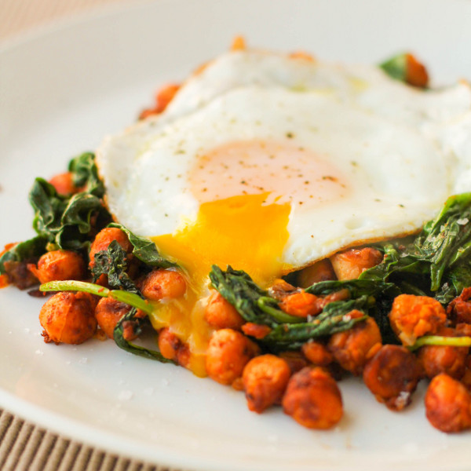

Smoky Chickpeas

Description
From culinarycolleen.com, very loosely based on
Mark Bittman’s Fried Chickpeas With Chorizo and Spinach.
Ingredients
- 2 tablespoons extra virgin olive oil
- 2 cups cooked chickpeas
- 1 tbsp paprika
- Salt, to tast
- 5 ounces fresh baby spinach
- 2 eggs
- Fresh-squeezed lemon juice (optional)
- Freshly ground black pepper, to tast
Instructions
- Heat the olive oil in a large skillet over medium heat. Add the
chickpeas and paprika; toss to coat evenly. Season with a pinch
of salt and cook for at least 10 minutes, or until the chickpeas
are sort of toasty looking but not burnt.
- Add the spinach and cook until just barely wilted. Meanwhile,
fry the eggs.
- When the spinach is wilted, season additional salt and pepper to taste.
Squeeze a little lemon juice on top of each serving and top with a
fried egg.